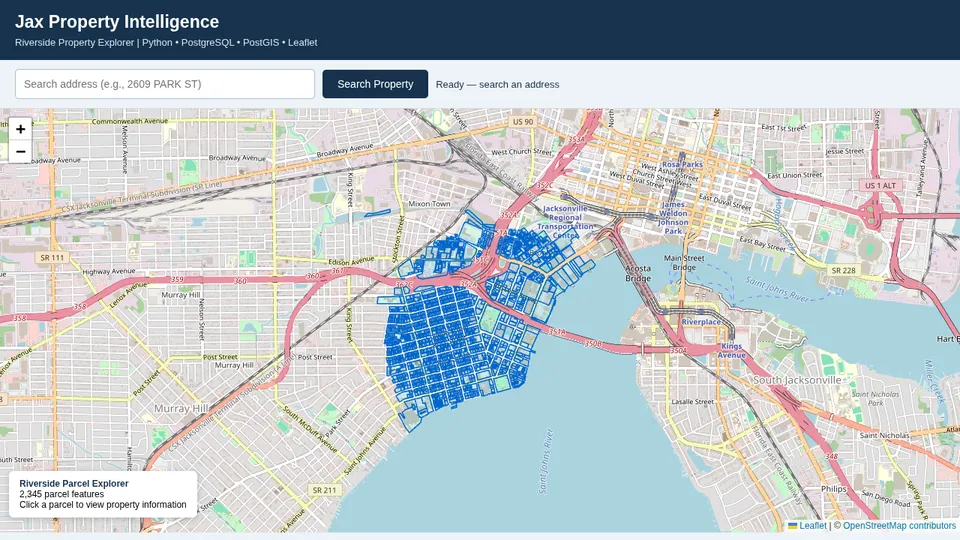

Self-initiated demonstration on public data · jax-property-intelligence
Jacksonville Property & Flood Risk
County property records arrive messy: broken map shapes, duplicate addresses, mismatched ZIP codes. This pipeline cleans them up, matches each property to its FEMA flood zone and sales history, and flags anything that doesn't add up, so you can trust the numbers before you buy, insure or lend. You get one clean property database and an interactive map. All 12,288 FEMA flood zones were loaded with none lost.
Built with: PostGIS, Python, GeoPandas, dbt, Leaflet